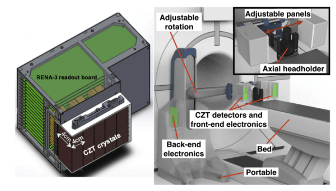
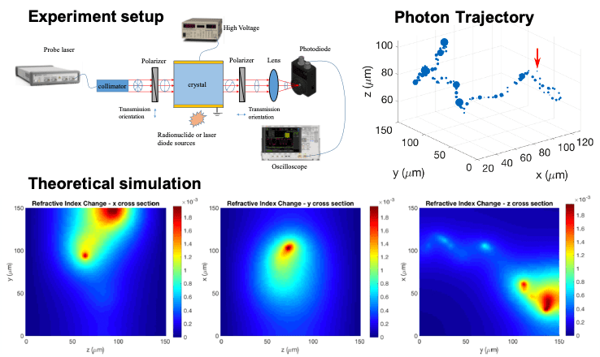
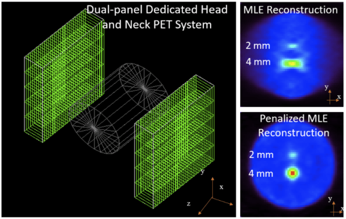
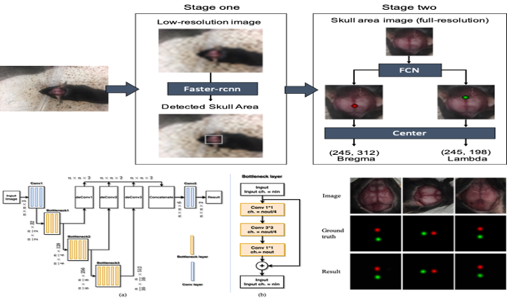

A two-panel head and neck dedicated PET system: We studied the performance of a two-panel positron emission tomography (PET) system dedicated to head and neck cancer (HNC) using Monte Carlo simulation. The goal of HNC treatment is not only to improve patient survival rate but also to preserve organ function and an HNC dedicated PET system with superior performance will help oncologists make better treatment plans. We will pursue the design, development, optimization, characterization, and validation of a dedicated head and neck PET scanner. Compared with a commercial whole-body PET system (GE Discovery MI), the proposed dedicated system shows better performance in terms of noise equivalent count rate, photon coincidence sensitivity, spatial resolution, and lesion visualization. The proposed system will also be the first head and neck scanner to exhibit features as small as 1 mm with high photon sensitivity, enabled by the use of high energy and spatial resolution properties of cadmium zinc telluride (CZT) crystals. The system will be integrated into a transportable stage and will be designed not to interfere with the conventional workflow of the WB-PET scan procedure. Additionally, the system can be used for dynamic PET studies. [Papers: SPIE Medical Imaging'20; Code: SLAC-HN ]
about publications projects vita misc
Current Projects
|

|
|

Optical property modulation method for PET : Using conventional scintillation detection, the fundamental limit in positron emission tomography (PET) time resolution is strongly dependent on the inherent temporal variances generated during the scintillation process, yielding an intrinsic physical limit for the coincidence time resolution of around 100 ps. On the other hand, modulation mechanisms of the optical properties of a material exploited in the optical telecommunications industry can be orders of magnitude faster to sub-picosecond to femtosecond. In this work, we first completed the theoretical calculation of the optical modulation based single high energy photon detection using pyPENELOPE and Lumerical. We also borrow from the concept of optics pump-probe measurement for the first time experimental study whether ionizing radiation can produce modulations of optical properties, which can be utilized as a novel method for radiation detection. [Papers: PMB'19, IEEE'20, PMB'21] |
|

Penalized MLE image reconstruction for a dual-panel dedicated head and neck PET system: Positron emission tomography (PET) suffers from limited spatial resolution in the current head and neck cancer management. We are building a dual-panel high-resolution PET system to aid the detection of tumor involvement in small lymph nodes (10 mm in diameter). The system is based on cadmium zinc Telluride (CZT) detectors with cross-strip electrode readout (1 mm anode pitch and 5 mm cathode pitch). One challenge of the dual-panel system is that the limited angular coverage of the imaging volume leads to artifacts in reconstructed images, such as the elongation of lesions. In this work, we leverage a penalized maximum-likelihood (PML) reconstruction for the limited-angle PET system. The dissimilarity between the image to be reconstructed and a prior image from a low-resolution whole-body scanner is penalized. An image-based resolution model is incorporated into the regularization. The method studied in this work provides a way to mitigate the limited-angle artifacts in the reconstruction from limited-angle PET data, making the high-resolution dual-panel dedicated head and neck PET system promising for head and neck cancer management. [Papers: PMB'20; Code: RILRECON ] |
|

Automated location detection of injection site for preclinical stereotactic neurosurgery through fully convolutional networks: Currently, injection sites of probes, cannula, and optic fibers in stereotactic neurosurgery are typically located manually. This step involves location estimations based on human experiences and thus introduces errors. In order to reduce location error and improve the repeatability of experiments and treatments, we have developed an automated locating framework to locating injection sites. This framework integrates a regional convolutional network and a fully convolutional network to locate specific anatomical points on skulls of rodents. Experiment results show that the proposed locating framework is capable to identify and locate Bregma and Lambda points (two important anatomical reference points) in rodent skull images with mean errors less than 250 um. This method is robust to different lighting conditions and mouse orientations and has the potential to simplify the procedure of locating injection sites. [Papers: Paper: Plos one'20 ] |